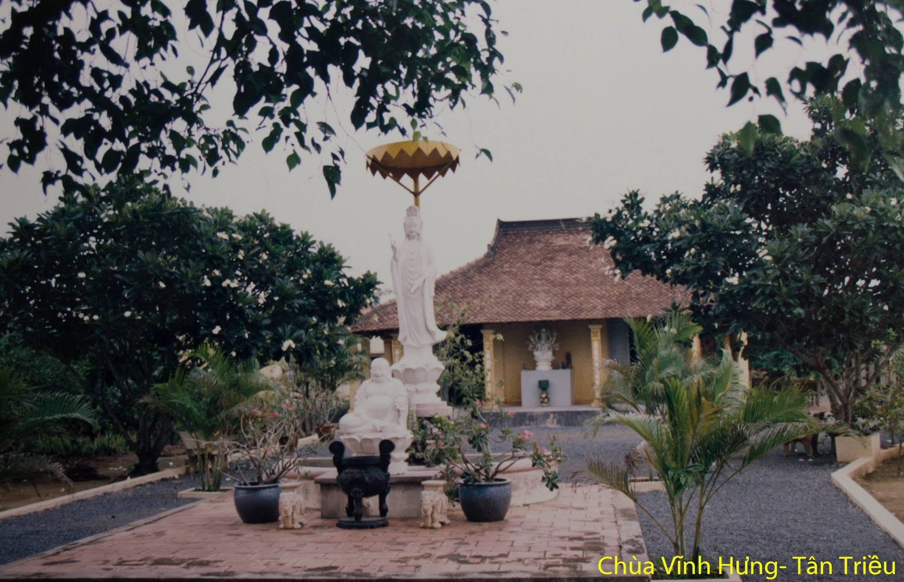

Lịch Sử Hình Thành
Chùa Vĩnh Hưng được thành lập vào năm 1995 (Phật lịch 2539) bởi Cố Hòa Thượng Thích Thiện Tâm. Ban đầu, chùa chỉ là một am tranh nhỏ đơn sơ nằm giữa vùng đồi núi thanh vắng, nơi ngài dừng chân tu tập sau nhiều năm vân du hóa đạo. Với đức độ và đạo hạnh của Ngài, ánh sáng Phật pháp dần lan tỏa, thu hút đông đảo thiện nam tín nữ gần xa tìm về nương tựa.
Trải qua gần 3 thập kỷ, dưới sự dìu dắt của chư Tôn đức tiền bối và sự phát tâm dõng mãnh của hàng phật tử tại gia, Chùa Bát Nhã đã trải qua 3 đợt đại trùng tu. Tới nay, bổn tự đã khoác lên mình diện mạo khang trang, bề thế nhưng vẫn giữ được nét cổ kính, trang nghiêm của kiến trúc Phật giáo Á Đông.

Kiến Trúc & Cảnh Quan
Quần thể kiến trúc Chùa Bát Nhã được thiết kế theo lối chữ "Công" (工), bao gồm: Cổng Tam Quan, Sân Đại AvL, Ngôi Chánh Điện, Nhà Hậu Tổ, Giảng Đường và Khuôn viên Tượng Phật Quan Âm lộ thiên.
Điểm nhấn đặc biệt của chùa là không gian xanh mát với những hàng cây cổ thụ hàng chục năm tuổi, những hồ sen tĩnh lặng và các lối đi lát đá tự nhiên. Tất cả tạo nên một khung cảnh thanh tịnh, giúp bất cứ ai bước chân qua Cổng Tam Quan đều cảm thấy bỏ lại được những bộn bề, lo toan của cuộc sống thế tục.
"Mục đích lớn nhất của Bổn tự không phải là xây dựng cơ sở vật chất to lớn, mà là xây dựng một đạo tràng thanh tịnh, nơi mỗi người có thể tìm thấy con đường tu tập giải thoát và lan tỏa tình yêu thương đến muôn loài."
— Trụ trì Thích Tâm An